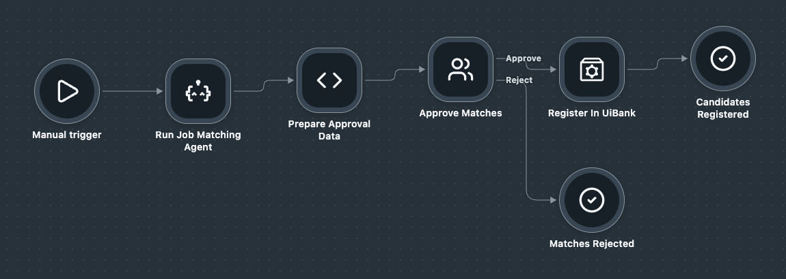

Coding Agents + UiPath: Hands-On Session¶
Build a Coded Agent and an RPA workflow, then orchestrate them with a human approval in Maestro — the whole recruitment pipeline, in two 90-minute blocks.
Overview¶
Every week a recruiter at a staffing agency does the same three things by hand: write a description for each open role, read through a candidate pool to find who fits, and register the shortlist in the client's portal. Hours of work, done differently by every recruiter, with no record of who approved what.
You'll automate all three — by describing what you want in plain English and letting your coding agent build it. Two components do the work, and one Maestro flow connects them, with the recruiter still making the final call.
Goal¶
By the end of the session you'll start one Maestro run with a job title and watch it end with approved candidates registered on UiBank. Along the way you'll have generated a Python agent, an XAML workflow, and a Maestro Flow — all by prompting a coding agent, not by dragging activities onto a canvas.
Training Environment
Log in at https://cloud.uipath.com/tpenlabs using tenant InvokeWorkshop.
What You'll Build¶
Three labs, one pipeline:
- Coded Agent (Block 1) — a Python LangGraph agent that takes a job title, generates a structured job description, scores a candidate pool against it, and returns the top 3 matches
- RPA Workflow (Block 2) — a Studio XAML workflow that takes a list of candidates, registers each one on the UiBank web form, and returns a status per candidate
- Maestro Flow (Block 2) — a UiPath Flow that runs the agent, creates an approval task in Action Center for the recruiter, and on approval runs the RPA workflow with the shortlist
Why this architecture
Maestro passes the data from one step to the next, so there's no database to set up and no custom app to build. The recruiter reviews the shortlist in an Action Center task — the review screen comes with the platform. That's what lets the full pipeline, orchestration included, fit in 180 minutes.
The scenario¶
uibank.uipath.com/register-account.How the data moves through one run:
job_title
│
▼
[ Coded Agent ] ──▶ job + top 3 matches
│
▼
[ Approval task in Action Center ]
│ approved
▼
[ RPA Workflow on UiBank ] ──▶ status per candidate
│
▼
flow output
All three steps run inside one Maestro Flow.
The contract between the components¶
You build the three pieces in separate labs, so agree on the data shapes first. Every prompt below uses these names — keep them exactly as written and the Maestro lab becomes wiring, not debugging.
| Component | Input | Output |
|---|---|---|
| Coded Agent | job_title (string) |
job (object) and matches (array of 3 candidates, each with all original fields plus score and reason) |
| RPA Workflow | in_CandidatesJson (string — a JSON array of candidates) |
out_ResultsJson (string — a JSON array of { username, status }) |
| Maestro Flow | job_title (string) |
the job and out_ResultsJson |
Why the matches keep every candidate field
The robot needs the date of birth, title, email, and the rest to fill in the UiBank form. If the agent returns only names and scores, Lab 3 breaks. That's why the Lab 1 prompt says it explicitly.
The candidate pool¶
Save this as candidates.json in an empty folder for Lab 1. The agent scores it, and the robot later registers the candidates the recruiter approves.
[
{"first_name": "Alice", "last_name": "Nguyen", "middle_name": "", "sex": "Female", "title": "Ms", "employment_status": "Full-time", "date_of_birth": "1/15/1990", "marital_status": "Single", "num_dependents": 0, "username": "alice.nguyen", "email": "alice.nguyen@example.com", "password": "Welcome2026!", "headline": "Forward Deployed Engineer", "years_experience": 6, "skills": ["Python", "TypeScript", "REST APIs", "UiPath", "customer workshops"]},
{"first_name": "Ben", "last_name": "Carter", "middle_name": "J.", "sex": "Male", "title": "Mr", "employment_status": "Full-time", "date_of_birth": "3/22/1985", "marital_status": "Married", "num_dependents": 2, "username": "ben.carter", "email": "ben.carter@example.com", "password": "Welcome2026!", "headline": "RPA Developer", "years_experience": 8, "skills": ["UiPath Studio", "Orchestrator", "VB.NET", "SQL"]},
{"first_name": "Clara", "last_name": "Osei", "middle_name": "", "sex": "Female", "title": "Ms", "employment_status": "Full-time", "date_of_birth": "7/4/1992", "marital_status": "Single", "num_dependents": 1, "username": "clara.osei", "email": "clara.osei@example.com", "password": "Welcome2026!", "headline": "AI Engineer", "years_experience": 4, "skills": ["Python", "LangGraph", "LLM evaluation", "AWS"]},
{"first_name": "David", "last_name": "Kowalski", "middle_name": "", "sex": "Male", "title": "Mr", "employment_status": "Full-time", "date_of_birth": "11/2/1981", "marital_status": "Married", "num_dependents": 3, "username": "david.kowalski", "email": "david.kowalski@example.com", "password": "Welcome2026!", "headline": "Solutions Architect", "years_experience": 12, "skills": ["Enterprise architecture", "Azure", "Integrations", "Pre-sales"]},
{"first_name": "Elena", "last_name": "Rossi", "middle_name": "M.", "sex": "Female", "title": "Ms", "employment_status": "Full-time", "date_of_birth": "5/30/1994", "marital_status": "Single", "num_dependents": 0, "username": "elena.rossi", "email": "elena.rossi@example.com", "password": "Welcome2026!", "headline": "Frontend Developer", "years_experience": 5, "skills": ["React", "TypeScript", "Design systems"]},
{"first_name": "Farid", "last_name": "Haddad", "middle_name": "", "sex": "Male", "title": "Mr", "employment_status": "Full-time", "date_of_birth": "9/12/1997", "marital_status": "Single", "num_dependents": 0, "username": "farid.haddad", "email": "farid.haddad@example.com", "password": "Welcome2026!", "headline": "Data Analyst", "years_experience": 3, "skills": ["SQL", "Power BI", "Python"]},
{"first_name": "Grace", "last_name": "Kim", "middle_name": "", "sex": "Female", "title": "Ms", "employment_status": "Full-time", "date_of_birth": "2/18/1991", "marital_status": "Married", "num_dependents": 1, "username": "grace.kim", "email": "grace.kim@example.com", "password": "Welcome2026!", "headline": "Customer Success Engineer", "years_experience": 5, "skills": ["Python", "APIs", "Customer onboarding", "Troubleshooting"]},
{"first_name": "Hugo", "last_name": "Martin", "middle_name": "", "sex": "Male", "title": "Mr", "employment_status": "Full-time", "date_of_birth": "8/8/1983", "marital_status": "Married", "num_dependents": 2, "username": "hugo.martin", "email": "hugo.martin@example.com", "password": "Welcome2026!", "headline": "Project Manager", "years_experience": 10, "skills": ["Agile", "Stakeholder management", "Budgeting"]}
]
Three things the robot needs to know about this data
- An empty
middle_nameis valid. The form should skip the field, not type an empty string. - The date format is
MM/DD/YYYY, which matches the form's picker. - All test passwords are demo-grade. In production, pull them from a vault.
Lab 1 — the Coded Agent¶
Block 1 · 50 min build + 10 min checkpoint
| Minutes | What you do |
|---|---|
| 0–5 | Save candidates.json, start your coding agent in that folder, paste the prompt. |
| 5–30 | Answer its questions and let it build. Read What's a Coded Agent? while it works. |
| 30–40 | Run the agent locally and check the output against the contract. |
| 40–50 | Publish the agent as a process in the CodingAgentsILT folder. |
| 50–60 | Checkpoint with the group. |
What's a Coded Agent?¶
You pick the framework, use the UiPath SDK, package it with one CLI command, and deploy it to Orchestrator.
What the hiring agent does¶
The four steps run in order — each one feeds the next, and Return hands the shortlist to whoever called the agent. In Lab 3, that's your Maestro Flow.
- 1 Prompt your coding agent to scaffold a LangGraph agent.
- 2 Use the UiPath LLM Gateway for the model calls, so you don't need your own API key.
- 3 Run it locally and check the output matches the contract.
-
4
Publish it as a process in the
CodingAgentsILTfolder, so Maestro can call it.
candidates.json— see The candidate pool.- A logged-in
uipCLI session. No personal LLM API key needed.
The prompt¶
This is real text you can paste:
Build a UiPath Coded Agent in LangGraph called {YourName}JobMatchingAgent,
in a new folder named {YourName}JobMatchingAgent.
Input: { "job_title": string }. Output: { "job": object, "matches": array }.
1. Write a JD for the job title with 3-5 role-specific must-have skills
2. Score each candidate in candidates.json (copy it into the project) from
0 to 100. A headline matching the job title counts most, then skills
matching the must-haves
3. Return the JD as "job" and the top 3 as "matches", highest first. Each
match keeps all original candidate fields, plus "score" and "reason"
Use the UiPath LLM Gateway at temperature 0, no external API keys. Add 3
evals that check the candidate whose headline matches the job title ranks
first.
Why the prompt is this specific
Fixed input and output names, a provided candidate pool, no database. Every constraint you add removes a question the agent would otherwise ask — or a decision it would make on its own. That's what keeps this lab inside 50 minutes, and what makes Lab 3 plug together.
Why the prompt sets a scoring rule
Without one, the agent writes a fresh JD on every run — often with generic must-haves like "cloud platforms" — and scores only against that JD. The same candidate can come first in one run and third in the next. The scoring rule ties the score to the job title and to concrete skills, and the evals check who ranks first, so an unstable ranking fails instead of slipping through. Expect small score changes between runs — that's normal for an LLM — but the top candidate should stay put.
-
1
Loads the
uipath-agentsskill. -
2
Generates
main.pywith the graph, and Pydantic models for the input, the JD, and the matches. -
3
Creates
evals/with three cases. - 4 Asks you to review before publishing.
What it generates¶
from langgraph.graph import StateGraph
from pydantic import BaseModel
class Input(BaseModel):
job_title: str
class Output(BaseModel):
job: JobDescription
matches: list[Match] # all candidate fields + score + reason
def generate_jd(state):
# LLM Gateway call -> structured JD
...
def match_candidates(state):
candidates = load_json("candidates.json")
# LLM Gateway call -> score every candidate, keep the top 3
...
graph = StateGraph(State, input=Input, output=Output)
Treat this as the shape to expect, not the exact code. Your agent's version will differ — that's fine, as long as the input and output names match the contract.
While it builds¶
Your coding agent takes several minutes to write and check its work. Use that time:
- Watch what it writes. Does the output keep every candidate field? Push back early — it's cheaper than after all the code exists.
- Read What's a Coding Agent? and spot the moment it loads the
uipath-agentsskill. - When it asks a question, answer briefly and specifically. "Yes, return all original fields" beats "whatever you think".
Run it locally¶
Your coding agent may ask if you want to run the agent locally to test it — answer yes. It starts the Developer Console on your machine and gives you a localhost link to open in your browser, like this:
Open the full link your coding agent gives you — the token at the end is unique to your session, so don't share it. Then:
- Choose Autonomous.
- In Input, enter
{ "job_title": "Forward Deployed Engineer" }. - Select Execute, and watch each node run.
- When the run completes, the right-hand panel shows the output: the JD and the three matches.
Core goal done
You get a JD and three matches, highest score first, with the candidate whose headline is Forward Deployed Engineer on top. Each match has a score, a reason, and every field from candidates.json — including date_of_birth and password. Publish next.
Someone else came first?
Based on candidates.json, Alice Nguyen should be the first result — she's the only candidate whose headline is Forward Deployed Engineer. If she isn't, read the reason for each match, then ask your coding agent why Alice Nguyen isn't first and to fix the scoring. Run the eval set to check the fix.
Publish the agent¶
Maestro calls processes, not local code, so the agent has to land as a process in the CodingAgentsILT folder. Both paths do the same thing. Run the commands yourself if you want to see each step, or hand the whole job to your coding agent.
This assumes the uip CLI is installed and you're logged into the right org. Replace the project path and tenant name with your own.
# 1. Go to the agent project
cd {YourName}JobMatchingAgent
# 2. Point the UiPath wrapper at the Python runtime
uip codedagent setup --force
# 3. Select the target tenant
uip login tenant set InvokeWorkshop --output json
uip login status --output json
# 4. Initialize the coded agent project
uip codedagent init
# 5. Publish to the tenant feed
uip codedagent deploy --tenant
Then, in Orchestrator, open the CodingAgentsILT folder and add a process from your {YourName}JobMatchingAgent package.
Give this prompt to your coding agent — it initializes the project, publishes, and creates the process for you:
Publish the {YourName}JobMatchingAgent coded agent to the CodingAgentsILT
folder, and create its process in the CodingAgentsILT folder.
Watch what it runs
The agent proposes each command before running it. Read them — publishing writes to your tenant, and that is the one step you want to see before it happens.
Checkpoint¶
Ten minutes, as a group, before the block ends:
- Two or three people show their matches for "Forward Deployed Engineer". Did the agents agree? Why not?
- Everyone confirms their process shows up in the
CodingAgentsILTfolder. - Didn't make it? No problem — in Lab 3 you'll use the trainer's
DemoJobMatchingAgent, which follows the same contract.
Lab 2 — the RPA Workflow¶
Block 2 · 30 min
| Minutes | What you do |
|---|---|
| 0–5 | Start your coding agent in your workshop folder and paste the prompt. |
| 5–15 | Let it discover the project and generate the workflow. |
| 15–25 | Run it with the test input and watch the browser fill in the form. |
| 25–30 | Publish it as a process in the CodingAgentsILT folder. |
On a Mac?
Studio Desktop runs on Windows only. Pair with someone on Windows for this lab. In Lab 3 you can use the trainer's DemoRegisterInUiBank process, which follows the same contract.
Why RPA for this part?¶
What the workflow does¶
in_CandidatesJson into a list of candidatesout_ResultsJson with a status per candidate- 1 Prompt your coding agent to generate the XAML workflow.
- 2 Let it discover the project first, so it sees the existing packages.
-
3
Run it with the test input and check
out_ResultsJson. -
4
Publish it as a process in the
CodingAgentsILTfolder.
uibank.uipath.com/register-account, the test input below, and UiPath Studio Desktop with the default packages.
Test input¶
Save this as test-input.json in your workshop folder, next to candidates.json. It holds three candidates in the same shape the Coded Agent returns, so you can test the robot without running Lab 1:
[
{"first_name": "Alice", "last_name": "Nguyen", "middle_name": "", "sex": "Female", "title": "Ms", "employment_status": "Full-time", "date_of_birth": "1/15/1990", "marital_status": "Single", "num_dependents": 0, "username": "alice.nguyen", "email": "alice.nguyen@example.com", "password": "Welcome2026!", "score": 92, "reason": "Customer-facing engineer with Python and UiPath"},
{"first_name": "Ben", "last_name": "Carter", "middle_name": "J.", "sex": "Male", "title": "Mr", "employment_status": "Full-time", "date_of_birth": "3/22/1985", "marital_status": "Married", "num_dependents": 2, "username": "ben.carter", "email": "ben.carter@example.com", "password": "Welcome2026!", "score": 71, "reason": "Strong UiPath delivery, less customer-facing"},
{"first_name": "Clara", "last_name": "Osei", "middle_name": "", "sex": "Female", "title": "Ms", "employment_status": "Full-time", "date_of_birth": "7/4/1992", "marital_status": "Single", "num_dependents": 1, "username": "clara.osei", "email": "clara.osei@example.com", "password": "Welcome2026!", "score": 68, "reason": "Solid Python and agents, earlier in career"}
]
The prompt¶
Build a UiPath workflow project called {YourName}RegisterInUiBank, in a new
folder named {YourName}RegisterInUiBank, that registers candidates at
uibank.uipath.com/register-account.
Arguments:
in_CandidatesJson (In, String): a JSON array of candidates with first_name,
last_name, middle_name, sex, title, employment_status, date_of_birth,
marital_status, num_dependents, username, email, and password. Other
fields may be present - ignore them.
out_ResultsJson (Out, String): a JSON array of { username, status } where
status is Registered or Failed.
UiBank rejects a username or email it has seen before. For each candidate,
add _{yourname} and the current time (HHmmss) to the end of the username and
to the part of the email before the @ - for example alice.nguyen_maria143205
and alice.nguyen_maria143205@example.com. Then skip middle_name when it's
empty, submit, and wait for the success message. Wrap each registration in a Try/Catch so
one failure doesn't stop the run.
Use the contents of test-input.json (in this folder) as the default value
of in_CandidatesJson, so the workflow runs on its own. Inspect the project
before you write the workflow.
How the workflow skill thinks¶
The uipath-rpa skill is discovery-first. It reads before it writes:
Let me inspect the project first...
-> Reading project.json
-> Found packages: UiPath.UIAutomation.Activities,
UiPath.WebAPI.Activities
I'll create Main.xaml with:
- Arguments in_CandidatesJson (In) and out_ResultsJson (Out)
- Deserialize JSON Array -> candidates
- For Each candidate
- Open browser at registration URL
- Type Into each form field (skip empty middle name)
- Click Submit, wait for success element
- Try/Catch per candidate, add { username, status } to results
- Serialize results -> out_ResultsJson
Created Main.xaml (validated)
Four things worth noticing in that output:
Run it locally¶
Give this prompt to your coding agent:
Prefer to watch it step by step? Open the project in Studio Desktop and press Run — the test input is already set as the default.
Core goal done
The browser registers all three candidates and out_ResultsJson shows a status for each one.
Publish the workflow¶
Give this prompt to your coding agent:
Publish {YourName}RegisterInUiBank to the InvokeWorkshop tenant and
make it available as a process in the CodingAgentsILT folder. Confirm
`uip login status` first. Report the process name, and stop if any step fails.
Then move straight on to Lab 3 — don't polish this workflow past the time box.
🔗 Lab 3 — the Maestro Flow¶
Block 2 · 50 min
| Minutes | What you do |
|---|---|
| 0–5 | Start your coding agent in your workshop folder and paste the prompt. |
| 5–25 | Review the flow it proposes, let it build, validate, and publish. |
| 25–40 | Run the flow, approve the task in Action Center, watch the robot register the candidates. |
| 40–50 | Fix what broke and run it again. |
What's a Maestro Flow?¶
What the flow does¶
job_title-
1
Prompt your coding agent to build the flow — it loads the
uipath-maestro-flowskill. - 2 Let it discover your two processes in the folder before it builds anything.
- 3 Validate and publish the flow.
- 4 Run it end to end and approve the shortlist yourself.
{YourName}JobMatchingAgent and {YourName}RegisterInUiBank in the CodingAgentsILT folder — or the trainer's DemoJobMatchingAgent and DemoRegisterInUiBank if yours didn't make it.
The prompt¶
Use this whenever your agent from Lab 1 and your workflow from Lab 2 are published and work as expected.
Build a Maestro Flow called {YourName}RecruitmentPipeline, in a new local
folder named {YourName}RecruitmentPipeline, that runs the recruitment
pipeline end to end. Publish it to the CodingAgentsILT folder in Orchestrator.
1. Trigger: manual, with one input job_title (string)
2. Run the {YourName}JobMatchingAgent process with { job_title }
3. Create an approval task assigned to me that shows the job title and the
three matches with first_name, last_name, score, and reason.
Approve continues, Reject ends the flow
4. On Approve, run the {YourName}RegisterInUiBank process with
in_CandidatesJson set to the agent's matches, serialized as a JSON string
5. End with outputs: the agent's job and the RPA's out_ResultsJson
Discover both processes in the CodingAgentsILT folder before you start, and
ask me before creating anything new. Validate the flow, publish it, and tell
me how to run it.
Use this only if your own agent or workflow isn't published or doesn't work as expected — for example, it fails when you run it, or its output doesn't match the contract. The trainer's DemoJobMatchingAgent and DemoRegisterInUiBank follow the same contract — see Resources.
Build a Maestro Flow called {YourName}RecruitmentPipeline, in a new local
folder named {YourName}RecruitmentPipeline, that runs the recruitment
pipeline end to end. Publish it to the CodingAgentsILT folder in Orchestrator.
1. Trigger: manual, with one input job_title (string)
2. Run the DemoJobMatchingAgent process with { job_title }
3. Create an approval task assigned to me that shows the job title and the
three matches with first_name, last_name, score, and reason.
Approve continues, Reject ends the flow
4. On Approve, run the DemoRegisterInUiBank process with
in_CandidatesJson set to the agent's matches, serialized as a JSON string
5. End with outputs: the agent's job and the RPA's out_ResultsJson
Discover both processes in the CodingAgentsILT folder before you start, and
ask me before creating anything new. Validate the flow, publish it, and tell
me how to run it.
Only one of yours isn't working?
Keep the one that works. For example, if your agent works but your workflow doesn't, use {YourName}JobMatchingAgent in step 2 and DemoRegisterInUiBank in step 4.
See the flow in Studio Web¶
Your coding agent builds the flow as a .flow file on your machine. To see it as a diagram, create a Flow in Studio Web and upload that file into it.
- Go to https://cloud.uipath.com/tpenlabs, select the InvokeWorkshop tenant, and open Studio Web.
- Select Create New, and under MAESTRO AUTOMATE choose Flow. Name it
{YourName}RecruitmentPipeline. - In the Explorer, right-click the Flow project and choose Import. Select the
.flowfile from your local{YourName}RecruitmentPipelinefolder and select Open. - The imported file opens in a new tab. The canvas shows every node and how they connect.
Flow under Maestro Automate, not Maestro Orchestrate
The menu lists Flow twice. Pick the one under MAESTRO AUTOMATE — that's the kind of flow your coding agent built. Don't use the one under MAESTRO ORCHESTRATE.
What it builds¶
The flow your coding agent builds should look like this in Studio Web:

The finished {YourName}RecruitmentPipeline flow| Node | What it does |
|---|---|
| Manual trigger | Starts the run with your job_title |
| Run Job Matching Agent | Calls your Coded Agent and gets back job and matches |
| Prepare Approval Data | A script step that formats the job title and the three matches for the approval task |
| Approve Matches | Creates the task in Action Center and waits. Approve and Reject lead to different branches. |
| Register In UiBank | On Approve, runs your RPA workflow with the matches as in_CandidatesJson |
| Candidates Registered / Matches Rejected | The two ways the run can end |
Your layout and node names can differ a little — what matters is the same order of steps and the two branches after the approval.
Make changes in one place
The upload is a copy. Changes you make in Studio Web don't reach your local files, and changes your coding agent makes locally don't reach Studio Web. If your coding agent changes the flow, upload the .flow file again to see the new version.
Run it end to end¶
- Start the flow with
job_titleset toForward Deployed Engineer— ask your coding agent to start it, or start it from Maestro in your tenant. - Wait for the agent step to finish. The flow pauses on the approval.
- Open Action Center, find the task, read the shortlist, and approve it.
- Watch the RPA job run in Orchestrator. The robot registers the three candidates on UiBank.
- Open the finished run in Maestro and check the outputs: the JD and a status for each candidate.
What 'done' looks like
One Maestro run that starts from a job title and ends with registered candidates — with no manual step in between except the approval you designed in.
Where it usually breaks¶
| Symptom | Likely cause | Ask your coding agent to… |
|---|---|---|
| Flow can't find a process | The process isn't in the CodingAgentsILT folder yet |
List the processes in the folder and fix the name |
| Robot step fails straight away | in_CandidatesJson got an object, not a string |
Serialize the matches to a JSON string before passing them |
| Robot registers people with blank fields | The agent dropped candidate fields from matches |
Check the agent's output against the contract |
| No task in Action Center | The task is assigned to someone else | Assign the approval to your user |
| RPA job stays pending | No robot is free in the folder | Tell the trainer — robots are shared |
Stuck? That's expected
Ask your coding agent to explain what it generated, check the run in Maestro and Orchestrator, and send the interesting failures our way with uip feedback send.
Gotchas you'll hit¶
Things every team learns in the first month.
| Gotcha | What to do |
|---|---|
| Trust but verify | The agent is fast and confident. Always review generated XAML and run the eval set before publishing. |
| Agree on the contract first | Separate components built by separate prompts only fit together if the names and shapes are fixed up front. |
| Pin your skill versions | Skills evolve. Lock to a version in your project so behaviour doesn't shift under you. |
| Context window matters | On large projects the agent can miss context. Tell it which files to focus on, or use an AGENTS.md. |
| Auth before everything | Run uip login first. Skills can't deploy if the CLI session expired — this is the usual cause of "it just stopped working". |
What you built¶
One end-to-end recruitment pipeline:
| # | Component | What it does |
|---|---|---|
| 01 | Coded Agent | LangGraph agent. Generates a job description and shortlists the top 3 candidates. |
| 02 | RPA Workflow | XAML workflow. Registers each candidate on UiBank and returns a status per candidate. |
| 03 | Maestro Flow | Runs the agent, waits for the recruiter's approval in Action Center, then runs the robot. |
All three were built with your coding agent, and they run as one process — in two 90-minute blocks.
Next steps¶
This week
- Install the skills on your laptop and actually use them.
- Run your pipeline with a different job title and see how the shortlist changes.
Next 30 days
- Rebuild something you already maintain with a coding agent. Compare how long it took, and note where the agent needed correcting.
- Write your own skill for a pattern your team repeats, so the agent gets it right without being told twice.
- Push past the happy path: ask the agent for eval sets, error handling, and the deploy step you'd normally do by hand.
Ongoing
- Bring your questions. No question is too basic, especially this early.
- Tell us when something doesn't work. Run
uip feedback sendthe moment a skill guesses wrong, a command fails, or a step takes three tries. - Say what you'd want next. The rough edges you report are what shape the next version of the skills and the CLI.
Appendix: CLI cheat sheet¶
Commands you'll run every day with the uip CLI.
| Command | What it does | When you'll use it |
|---|---|---|
uip skills install |
Install UiPath skills into your coding agent | First-time setup, per project |
uip login |
Authenticate with your UiPath tenant | Start of each session |
uipath new |
Scaffold a new Coded Agent project | Starting a new agent |
uipath run |
Run the agent locally with input.json |
Testing during development |
uipath eval |
Run the evaluation set, score against expectations | Before deploying |
uipath publish |
Pack and publish to your tenant | Shipping |
uip feedback send |
Report a bug or a skill that guessed wrong | Whenever something breaks |